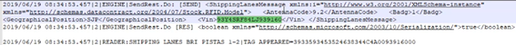

iVES
Documentação do Middleware iVES
Introdução
- Nome: Documentação middleware iVES
- Versão: v1.0
- Autores: Maikol Kogawa; Filipe Ferreira
Documentação do middleware iVES. Guia de funcionamento, instalação, funções, e como resolver erros mais comuns.
Como instalar o iVES
Converse com o Maikol ou com o Filipe e solicite o instalador. Após isso, inicie o arquivo Setup.exe e aguarde o final da instalação para continuar.

Iniciando
Após terminar a instalação, certifique-se que o serviço iVES Device Engine está funcionando conforma mostra a imagem abaixo.
Após isso, você poderá começar a utilizar o middleware iVES. Inicie o arquivo manager.exe para começar a mexer no programa
Para a realização de testes, utilize o programa example.exe
Caminho para o programa: Program Files (x86)\T-Systems\Ives. Ou o caminho personalizado que você escolheu durante a instalação.
Funcionamento
Sensor
Quando um sensor é acusado, ele está dentro do distribution group do GPI no campo GPI Report Group.
Processo de Produção

Distributions
Distribution
Para cada leitor que é criado no middleware associado com uma estação dentro da planta da Renault, como por exemplo, CVU_MADT_1, SHIPPING LANES BRI, entre outros, são criadas configurações para o leitor contidos nas abas ReaderConfig e ROSpec, onde estão contidas informações de potência, uso de GPIs (laços indutivos, alarmes, etc).
As regras de negócios, ou seja, o fluxo dos dados que são lidos pelos leitores RFID e que são distribuídos para as diferentes aplicações, como comunicação com o ALR, PSF, envio de alertas, erros ou ainda acionamento de dispositivos como semáforos é feita através de distributions.
Os distributions são linhas de comandos que podem ter diversas tipos de saídas, inclusive combinadas como é o caso do tipo MULTIPLE.
É possivel configurar os distributions acessando o menu: Manager -> Distribution. Conforme podemos observar na figura abaixo.
Distribution Groups
Os distributions são linhas de comandos que podem ter diversas tipos de saídas, inclusive combinadas como é o caso do tipo MULTIPLE.
É possivel configurar os distributions groups acessando o menu: Manager -> Distribution Group. Conforme podemos observar na figura abaixo.
Opções de Saída
As opções de saída dos distributions são as seguintes:
No caso da opções Multiple, como dito anteriormente, é possivel ter varias saidas.
Arquivos
RenaultXML Usado para fábrica principal e o CMU é pra fabrica da antiga Nissan. Dentro do arquivo tem as partes de replicação e os comandos da impressora. Esse arquivo possui as funções que o programa usa pra saber as ordens de produção
Caminho para o arquivo: Program Files (x86)\T-Systems\Ives. Ou o caminho personalizado que você escolheu durante a instalação. Arquivo no formato XML.
LLRP e BRI
As diferenças entre o LLRP e o BRI tem haver com os comandos do GPIO que tem que acionar tudo de uma vez (talvez). Alguns tem acionamento por antena e ter mais de um laço indutivo, estão como BRI, pois os LLRP só permitem uma entrada, um laço indutivo. Além disso, também há a diferenteça no ROSpec, onde no BRI a escrita é em Initialization Commands e no LLRP o XML
BRI:
LLRP:
É possível ver onde a ativação por laço indutivo nos BRI está ativada pelo campo ReaderConfig, que vai estar com o comando: 100|true|MYSTOPTRIGGER|0.
Para desativar o laço indutivo, devemos apagar tudo abaixo do TRIGGER RESET. Os comandos são: SET MYREAD, SET MYSTOP, e os TRIGGERs, que são responsáveis por fazer a ativação e as desativações. Ele ativa quando o GPI 1 ou 2 estiver acionado e desativa se os dois estiverem desligados. Se um dos dois não estiver desligado ele não desliga a antena. Após isso entra no ReaderConfig e clica em Load Default.
Readers
Campos (Fields)
General: Configurações gerais do leitor
Antenna: lorem ipsun.
ReaderConfig: Configurações do leitor.
ROSpec: Reader Operation Specification. Conjunto de configurações da forma de operação do leitor
Distribution Groups: lorem ipsun.
TAG FILTER: serve para fazer o filtro.
SHIPPING LANES X-X
Expedition lanes.
CHECK_IN_BRI
CHECK IN SHIPPING CAMINHOES - 1 antena - CVP PATIO 009 - PRINCIPAL.
FALSO_POSITIVO
Atualmente não funcionando. Desativado. Processo de gravação de escrita, o operador tem um coletor que é uma aplicação/ ele pega o coletor, lê o código de barras que é o chassi, que vai pro middlware. Esse possui um processo rodando que possui uma integração com um sistema de produção. Ele busca em uma fila a ordem dos carros que vai ser produzida. Então ele lê, manda pra impressora e vai para os arquivos do middleware.
Necessário pois no começo do projeto tinham muitos erros de tag morta. Para garantir a fila de produção, para ver o cara não errou, e que todas as tags estavam certas. Os carros iam passando e tinha um leitor no final da linha de produção pra verificar se estava tudo certo. Em caso de erro reimprimir a etiqueta. FALSO POSITIVO DESATIVO. Provavelmente dando erro na fila, na impressão e no banco. Para resolver, precisa verificar o processo e zerar a fila dele. Ele ficava acumulando fila no banco de dados Hoje eles imprimem usando o coletor ou usando uma base de reimpressão que é diretamente conectada no coletor, sem passar pelo middleware.
CHECK_OUT
CHECK OUT SHIPPING CAMINHOES - 3 antenas - CVP PATIO 010 - PRINCIPAL.
CVP_GATE_BRI
EntradaSaida PATIO (ANT 3 e 4 Casa Amarela) - CVP PATIO 001 - PRINCIPAL
CHECK_IN_BRI
CHECK IN SHIPPING CAMINHOES - 1 antena - CVP PATIO 009 - PRINCIPAL.
CVP_MADT_1 BRI
MADC VP - PISTA ESQUERDA e CENTRAL - CVP MON 193 - PRINCIPAL
CVP_MADT_2 BRI
MADC VP - PISTA DIREITA - CVP MON 194 - PRINCIPAL
CVP_RETOQUE
RETOQUE CVP
CVU MADU SECUNDARIO
CVU MADU SECUNDARIO - SEM MAPA - NAO EXISTE NO SERVIDOR 19
CVU_GATE BRI
PATIO DA CVU ENTRADA E SAIDA
CVU_MADT_1 BRI
MADC VU PISTA DIREITA - CVU MON 153 - PRINCIPAL
CVU_MADT_2 BRI
MADC VU PISTA ESQUERDA - CVU MON 154 - PRINCIPAL
MADU PRIMARIO CVP
DESATIVADO - SEM MAPA (recolhido estoque) - BACKUP
MADU SECUNDARIO
DESATIVADO - SEM MAPA (recolhido estoque) - BACKUP
PATIO P5
DESATIVADO Leitor Patio P5 - CVP MON 196 - BACKUP
SHIPPING_BUFFER_X
Shipping Buffer Pista Esquerda (X=1), Diretira (X=2) - CVP PATIO 002, 003 - BACKUP
ZBKP CHECKIN
copy from CHECK_IN_BRI
Erros Comuns
ON FAILURE GROUP. Se der alarme, o leitor vai mandar aviso pra esse grupo definido aqui. O distribution group das antenas fica no campo DISTRIBUTION GROUP. No conceito dos group, podemos ter várias distribuições como SAP, RP, PCE, etc. Em cada group, há um método, e no caso do tipo multiple, pode ser mais de um método definido. O processo é: ele insere a TAGID no banco e chama o distribution no método definido aqui, como por exemplo em REST. Esse último método é que faz a integração com o ALR.
Shipping Lanes
Não está lendo ou precisa aumentar o Shipping Lanes. E no MADT. Se não estiver no log, o cara na fabrica pode ter passado com os vidros baixos, ou a tag pode estar com algum problema
ALR: Defini uma vaga para o veículo no pátio. Quando o veículo já está no Shipping Lane, ele verifica se ele está indo para o caminhão correto.
Problemas Farol
Exemplo: Passaram o caro e não foi: Olhar os logs e procure por esse comando buscando pelo chassi do veículo a ser analisado
Analisando esse comando, podemos ver que ele foi lido, o chassi foi processado e o comando veio como true. Nesse exemplo, parece estar tudo certo, então podemos testar se esta funcionando. Para fazer isso abrimos o arquivo example.exe (pode ser que funcione apenas para o LLRP) e fazemos o seguinte:
Programa aberto -> Commands -> Write GPO -> Digitar o IP do servidor. Caso esteja na fábrica, o IP é 127.0.01. Normalmente você já vai estar dentro do servidor -> Reader Name -> Colocar o nome do reader desejado. Ex: CVP_BRI -> Value (0 – 15) -> O 0 ou o 15 aciona todos os sinais. Então desde os dois comandos -> Timeout (MS) -> 5000. Isso pro LLRP, no BRI é so colocar os números desejados.
Licença
Software sobre licensa